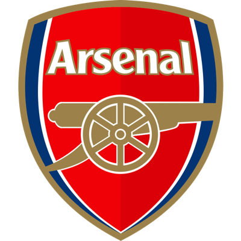
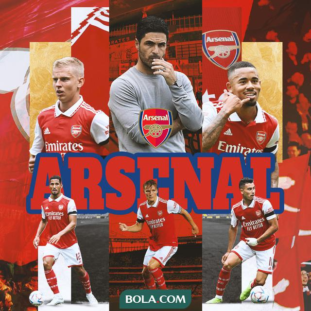

ARSENAL
Arsenal (rasmiy toʻliq nomi Arsenal Football Club, inglizcha talaffuzi: [ˈɑrsənəl 'futbɔ:l klʌb]) — Shimoliy Londonda (Islington tumani) joylashgan ingliz professional futbol klubi boʻlib, Premer-ligada oʻynaydi. 1886 yil oktyabr oyida tashkil etilgan. Klub 13 marta Angliya chempioni bo'lgan, 14 marta Angliya kubogini qo'lga kiritgan. Klubning uy stadioni Amirliklar bo'lib, sig'imi 60 704 tomoshabin[1]."Arsenal" o'z tarixining ko'p qismini Angliya futbolining yuqori divizionida o'tkazdi va 1992 yilda Angliya Premer-ligasining asoschi klublaridan biriga aylandi[4]. Gerbert Chapman 1925 yilda "Arsenal" bosh murabbiyi etib tayinlangan. 1924 yilda Chapman boshchiligida Xaddersfild Taun ligada birinchi o'rinni egalladi. Bu odam "Arsenal"ga muvaffaqiyatning ilk daqiqalarini olib keldi. 1925 yilda ofsayd qoidasi o'zgartirildi. Chapman birinchilardan bo'lib ushbu qoidani o'zgartirishdan olinadigan foydani ko'rdi. Uning inqilobiy taktikasi va mashg'ulot usullari, Aleks Jeyms va Kliff Bustin kabi yulduz futbolchilar bilan birgalikda, 1930-yillarda klubning dominant bo'lishiga yordam berdi.

Arsenal (rasmiy toʻliq nomi Arsenal Football Club, inglizcha talaffuzi: [ˈɑrsənəl 'futbɔ:l klʌb]) — Shimoliy Londonda (Islington tumani) joylashgan ingliz professional futbol klubi boʻlib, Premer-ligada oʻynaydi. 1886 yil oktyabr oyida tashkil etilgan. Klub 13 marta Angliya chempioni bo'lgan, 14 marta Angliya kubogini qo'lga kiritgan. Klubning uy stadioni Amirliklar bo'lib, sig'imi 60 704 tomoshabin[1]."Arsenal" o'z tarixining ko'p qismini Angliya futbolining yuqori divizionida o'tkazdi va 1992 yilda Angliya Premer-ligasining asoschi klublaridan biriga aylandi[4]. Klub, shuningdek, 1919 yildan beri Premer-liganing oliy divizionida ketma-ket eng ko'p mavsumlar o'tkazish bo'yicha rekordga ega [5].
2021 yil uchun Forbes ma'lumotlariga ko'ra, "Arsenal" dunyodagi eng qimmat futbol klublari ro'yxatida sakkizinchi o'rinni egalladi va 2,8 milliard dollarga baholanadi[6]. Deloitte audit kompaniyasi ma'lumotlariga ko'ra, 2021 yil yanvar holatiga ko'ra, "Arsenal" 388 million yevro daromad bilan eng daromadli futbol klublari reytingida 11-o'rinni egallagan[7].


"Arsenal" futbol klubi nomi
Taxallus The Gunners
1886 yil oktyabrda tashkil etilgan; 136 yil oldin (Dial Square nomi bilan)
Emireyts stadioni, London
Imkoniyat: 60 704[1]
Egasi
Amerika Qo'shma Shtatlari Sten Kroenke (97,13%)
erkin suzishda (2,87%)[2]
Ispaniya terma jamoasi bosh murabbiyi Mikel Arteta
Kapitan Norvegiya Martin Odegaard
UEFA reytingida 17-o'rin[3]
Fly Emirates homiysi
www.arsenal.com sayti
Premer-liga musobaqasi
2021/22 5Arsenal klubi 1886 yil oktyabr oyida Londonning janubi-sharqida Vulvichdagi Qirollik Arsenal qurol-yarog' zavodi ishchilari tomonidan tashkil etilgan. Dastlab, klub "Dial Square" (ing. Dial Square) deb nomlangan (birinchi jamoaning ko'plab o'yinchilari ishlagan kemasozlik ustaxonalaridan birining nomidan). "Arsenal" birinchi o'yinini 1886 yil 11 dekabrda Sharqiy Uonderersga qarshi o'tkazdi. “Kanonirlar” 6:0[8] hisobida g'alaba qozonishdi. Ikki hafta o'tgach, Rojdestvo bayramida futbolchilar yig'ilishi tashkil etildi, unda klub nomini "Qirollik Arsenal" deb o'zgartirishga qaror qilindi, o'yinlar o'tkaziladigan joy va futbolchilarning liboslari tanlandi. Qizilni “Nottingem Forest”ning sobiq futbolchisi Fred Berdsli taklif qilgan.